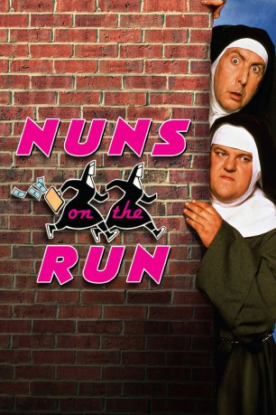
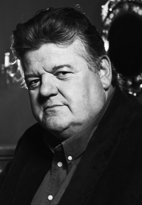
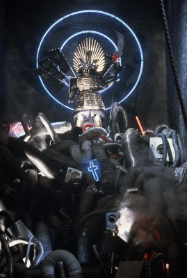

#6219 Nonnen auf der Flucht
Alternativ: Nuns on the Run
 
 IMDB-Wertung: 5.9 / 10
IMDB-Wertung: 5.9 / 10  Metascore: 0
Metascore: 0 
Brian und Charlie sind Kleinkriminelle, die für einen Gangster arbeiten. Als sie ankündigen, aussteigen zu wollen, sollen sie, nachdem sie die lokalen Triaden ausgeraubt haben, über die Klinge springen. Doch die Beiden nehmen das Geld für sich mit, als sie davon erfahren und flüchten. Doch ihr Fluchtplan geht schief und so sehen sie sich genötigt, als Nonnen verkleidet in einem Mädchenpensionat unterzukommen. Dort wimmelt es natürlich bald nur so von ungebetenen Besuchern...
Jahr: 1990
Dauer: 88 Minuten
FSK:
Land: England Studio: 20th Century FoxTonspuren: DD2.0 - ,
Untertitel:
Auflösung: SD (720x400) Größe: 799 MB
Genre: Komödie, Krimi
Regisseur: Jonathan Lynn
Drehbuch: Kevin Coughlin
Soundtrack:
Darsteller:
 Eric Idle als Brian Hope / Flight Attendant #1 , as Brian Hope
Eric Idle als Brian Hope / Flight Attendant #1 , as Brian Hope-  Robbie Coltrane als Charlie McManus / Flight Attendant #2 , as Charlie McManus
- Camille Coduri als Faith
- Janet Suzman als Sister Superior
- Lila Kaye als Sister Mary of the Annunciation
-  Winston Dennis als Morley
- Oliver Parker als Doctor
- Julie Graham als Casino Waitress
- Dan Hildebrand als Casino Manager
- Doris Hare als Sister Mary of the Sacred Heart
- Robert Patterson als 'Case' Casey
- Robert Morgan als Abbott
- Tom Hickey als Father Seamus
- Colin Campbell als Norm
- Richard Simpson als Mr. Norris
- Nicholas Hewetson als Louis
- Gary Tang als Ronnie Chang
- David Forman als Henry Ho
- Nigel Fan als Dwayne Lee
- Ozzie Yue als Ernie Wong
- Tatiana Strauss als Michelle
- Wabei Siyolwe als Julie
- Helen FitzGerald als Tracey
- Stewart Harwood als Faith's Father
- Peter Geeves als Faith's Brother
- Irene Marot als Hysterical Bank Manageress
- Louis Mellis als Bank Security Guard
- Craig Crosbie als Policeman in Car Park
- Fred Haggerty als Gatekeeper
- Michael Beint als Bewildered Policeman
- Tex Fuller als Taxi Driver
- Lee Simpson als Policeman with Radio
- Joanne Campbell als Ward Nurse
- Gedren Heller als Chemist Shop Assistant
- Britt Horrow als Hospital Receptionist
- David Becalick als Police Sergeant
- Aran Bell als Police Constable
- Francine Walker als Tied-Up Nurse
- Shirley Anne Selby als Tied-Up Nurse
- Jennifer Hall als Airport Ticket Girl
- John Phythian als Airport Policeman
- Carole Anne als Nude Girl in Shower Room , uncredited
- Chris Chering als Passer-by , uncredited
Datei: X:\1990\Nonnen auf der Flucht (1990, FSK, 720x400).mkv seit 17.05.2017
Festplatte: HD 1987-1991
 Es gibt insgesamt 52 Filme in der Gruppe '1990'
Es gibt insgesamt 52 Filme in der Gruppe '1990'